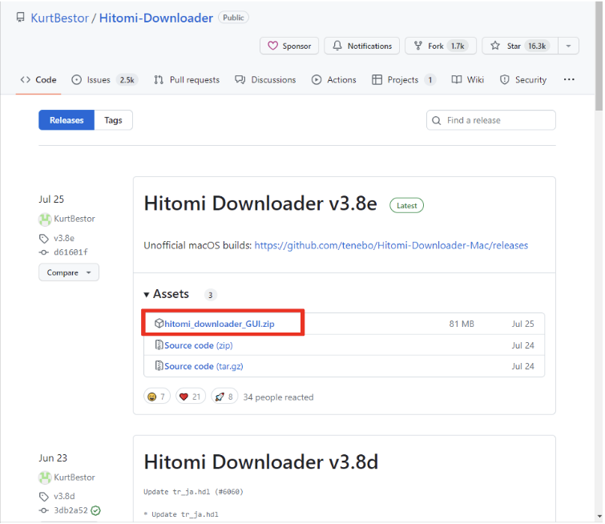
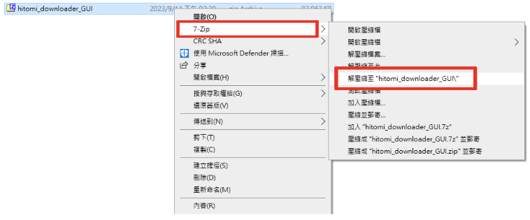
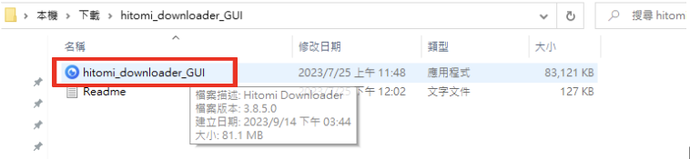
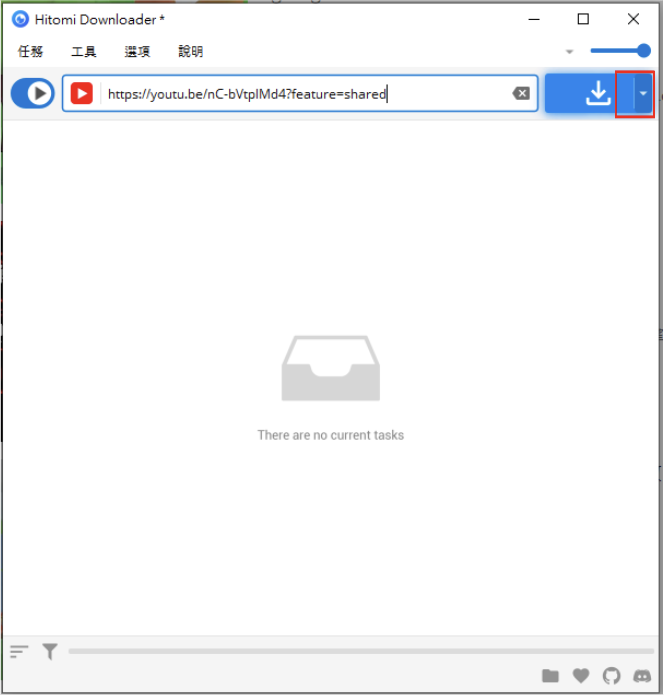
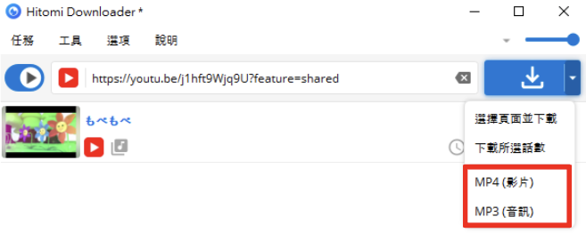
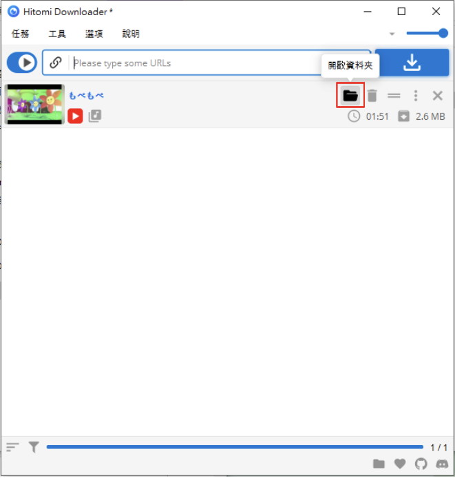

下載mp3&mp4的黑魔法
hitomi下載器是一個神奇的開源軟體， 他可以透過超連結下載大部分的影片或是音檔並且存到本機。 最棒的事是這個軟體是一個開源軟體，在GitHub能夠找到開源碼， 最重要的事他不會像網頁版的“youtube to mp3”有一堆彈出式的色情廣告， 或者是讓你的電腦顯示一些中毒的畫面，這對於我來說已經是極大的福音了， 於是我想要向大家介紹這款開源軟體 “Hitomi Downloader”! 可惜的是目前只有windows的使用者能夠正常使用， mac版本的現在是beta版本，但是我試過了目前(2023 sept.15)沒辦法使用。  這是 Hitomi Downloader GitHub 的倉庫， 今天要教會大家使用這個開源軟體，您可以在GitHub倉庫裡面找到“hitomi_downloader_GUI.zip” 這個壓縮檔並且在點擊後執行下載。  右鍵解壓縮檔案  點擊並執行程式  輸入一個影片的網址後將游標移動到下載按鈕上，此時會有一個顯示下拉式選單的按鈕出現，點擊顯示下拉式選單  接著就可以選擇要下載mp3或是mp4了  最後我們能夠開啟資料夾取的mp3或是mp4 若您提供的影片連結沒辦法下載，您可以從 Hitomi downloader支援的平台列表 進行確認，如果列表上面沒有的話那Hitomi downloader可能不支援 ，應該要試試看其他的方法了。